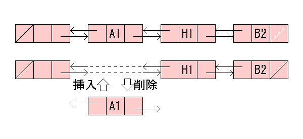

| 4.3 候補手リストの導入 |
本節からは探索処理の高速化を行います。
まず最初に候補手リストを導入します。
候補手リストとは、空きマスの一覧を双方向リストにしたものです。
双方向リストとは、下図のようにデータと前の要素、次の要素へのポインタを持つデータ構造のことです。

着手リスト
リバーシでは、１度着手したマスには終局まで着手できないため空きマスのみに着手の可能性があります。
そこで最初に空きマスの一覧を双方向リストとして保持しておき、
まず最初に候補手リスト構造体MoveListを定義します。
MoveListのメンバ変数は以下の３つです。
typedef struct _MoveList MoveList;
struct _MoveList
{
MoveList *Prev;
MoveList *Next;
int Pos;
};
次にCom構造体に候補手リストを追加します。
MoveList１個が１マスに対応するので、MoveListの配列（要素の個数はマスの数）を追加します。
struct _Com
{
Board *Board;
Evaluator *Evaluator;
int MidDepth;
int WLDDepth;
int ExactDepth;
int Node;
/* 候補手リストを追加 */
MoveList Moves[BOARD_SIZE * BOARD_SIZE];
};
次に盤面から候補手リストを生成する関数を実装します。
static void Com_MakeList(Com *self)
{
int pos_list[] = {
A1, A8, H8, H1,
D3, D6, E3, E6, C4, C5, F4, F5,
C3, C6, F3, F6,
D2, D7, E2, E7, B4, B5, G4, G5,
C2, C7, F2, F7, B3, B6, G3, G6,
D1, D8, E1, E8, A4, A5, H4, H5,
C1, C8, F1, F8, A3, A6, H3, H6,
B2, B7, G2, G7,
B1, B8, G1, G8, A2, A7, H2, H7,
D4, D5, E4, E5,
NOMOVE
};
int i;
MoveList *prev;
prev = self->Moves;
prev->Pos = NOMOVE;
prev->Prev = NULL;
prev->Next = NULL;
for (i = 0; pos_list[i] != NOMOVE; i++) {
if (Board_Disk(self->Board, pos_list[i]) == EMPTY) {
prev[1].Pos = pos_list[i];
prev[1].Prev = prev;
prev[1].Next = NULL;
prev->Next = &prev[1];
prev++;
}
}
}
盤面を調べ、空きマスを見つけたら候補手リストに追加します。
リストの要素のPrevが前の要素を指し、Nextが次の要素を指すようになっていることを確認してください。
空きマスはpos_listの順番に追加していきます。
poslistには「好手になりそうな」な位置が前の方に代入されています。
説明は後で行ないますが、良い手を先に探索したほうが探索効率がよくなります。
そこで「好手になりそうな」手から先に探索をすることで探索効率を上げるのがposlistの役目です。
着手毎に候補手リストから対応する要素を削除し、１手戻すときに要素を戻すことは既に説明しました。
この処理は以下のように記述できます。
RemoveList()が要素を削除する関数、RecoverList()が要素を戻す関数です。
ただし、RecoverList()の引数となる要素はRemoveList()によって削除されていることを想定しています。
static void RemoveList(MoveList *self)
{
if (self->Prev) {
self->Prev->Next = self->Next;
}
if (self->Next) {
self->Next->Prev = self->Prev;
}
}
static void RecoverList(MoveList *self)
{
if (self->Prev) {
self->Prev->Next = self;
}
if (self->Next) {
self->Next->Prev = self;
}
}
候補手リストを操作する関数はできたので、次はそれを使って既存の関数を修正します。
まずCom_NextMove()を修正します。
int Com_NextMove(Com *self, const Board *in_board, int in_color, int *out_value)
{
int result;
int left;
int value;
int color;
Board_Copy(in_board, self->Board);
self->Node = 0;
left = Board_CountDisks(self->Board, EMPTY);
/* 候補手リストの生成 */
Com_MakeList(self);
if (left <= self->ExactDepth) {
value = Com_EndSearch(self, left, -BOARD_SIZE * BOARD_SIZE, BOARD_SIZE * BOARD_SIZE, in_color, Board_OpponentColor(in_color), 0, &result);
value *= DISK_VALUE;
} else if (left <= self->WLDDepth) {
value = Com_EndSearch(self, left, -BOARD_SIZE * BOARD_SIZE, 1, in_color, Board_OpponentColor(in_color), 0, &result);
value *= DISK_VALUE;
} else {
if ((in_color == WHITE && self->MidDepth % 2 == 0) ||
(in_color == BLACK && self->MidDepth % 2 == 1)) {
Board_Reverse(self->Board);
color = Board_OpponentColor(in_color);
} else {
color = in_color;
}
value = Com_MidSearch(self, self->MidDepth, -MAX_VALUE, MAX_VALUE, color, Board_OpponentColor(color), 0, &result);
}
if (out_value) {
*out_value = value;
}
return result;
}
次に探索関数Com_MidSearchに候補手リストを導入します。
まず候補手リストであるMovesメンバから手を探します。
ある要素の候補手が着手可能であればその要素をリストから削除し、子ノードの探索を行ないます。
子ノードの探索が終了したら要素を元に戻します。
Com_EndSearch()にも同様の修正が必要ですが、ここでは省略します。
static int Com_MidSearch(Com *self, int in_depth, int in_alpha, int in_beta, int in_color, int in_opponent, int in_pass, int *out_move)
{
MoveList *p;
int value, max = in_alpha;
int can_move = 0;
int move;
if (in_depth == 0) {
self->Node++;
return Evaluator_Value(self->Evaluator, self->Board);
}
*out_move = NOMOVE;
/* 候補手リストから手を探す */
for (p = self->Moves->Next; p; p = p->Next) {
if (Board_Flip(self->Board, in_color, p->Pos)) {
if (!can_move) {
*out_move = p->Pos;
can_move = 1;
}
value = -Com_MidSearch(self, in_depth - 1, -in_beta, -max, in_opponent, in_color, 0, &move);
Board_Unflip(self->Board);
if (value > max) {
max = value;
*out_move = p->Pos;
if (max >= in_beta) {
return in_beta;
}
}
}
}
if (!can_move) {
if (in_pass) {
*out_move = NOMOVE;
self->Node++;
max = DISK_VALUE * (Board_CountDisks(self->Board, in_color) - Board_CountDisks(self->Board, in_opponent));
} else {
*out_move = PASS;
max = -Com_MidSearch(self, in_depth - 1, -in_beta, -max, in_opponent, in_color, 1, &move);
}
}
return max;
}
さて今回の修正はどの程度の効果があるでしょうか。
候補手リストは空きマスが少ないときに効果を発揮します。
空きマスが多い場合には、着手できない空きマスが多いためです。
そのため候補手リストの効果は終盤になるほど大きくなります。
特に終盤探索では探索速度が３〜４倍になります。